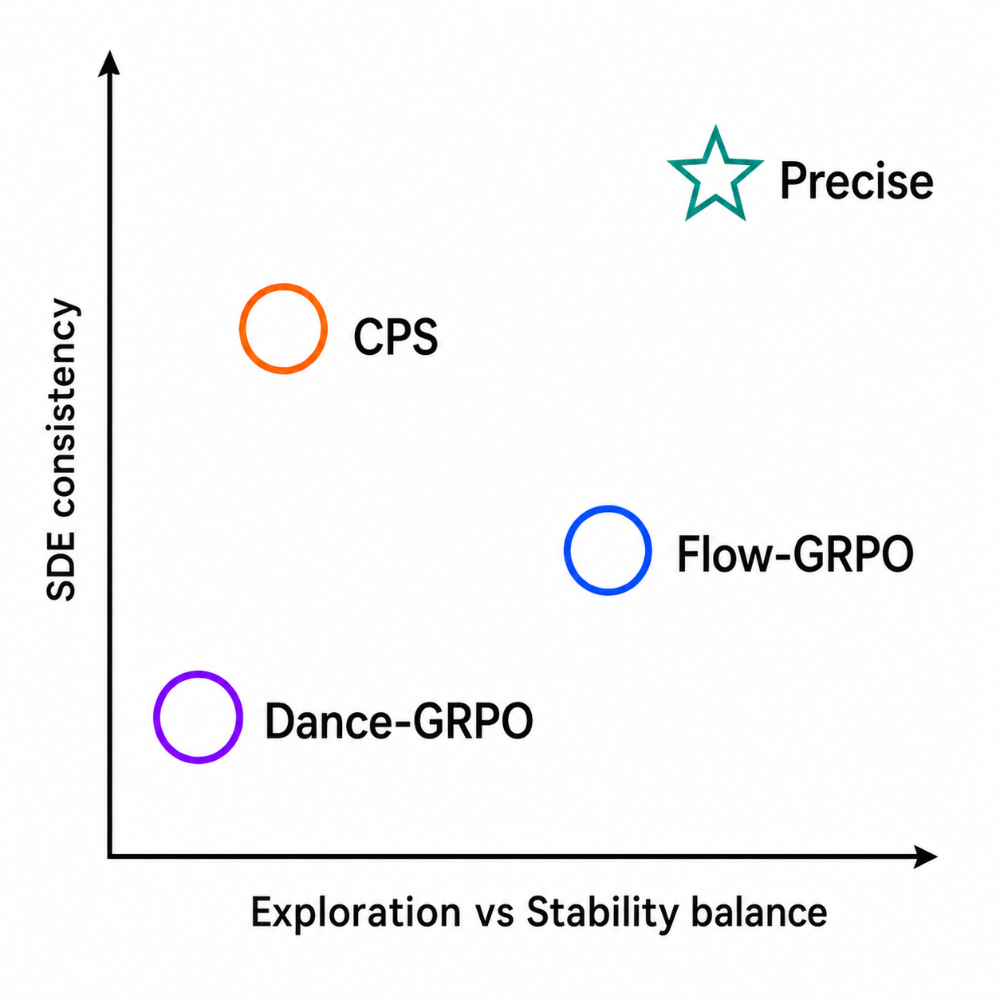
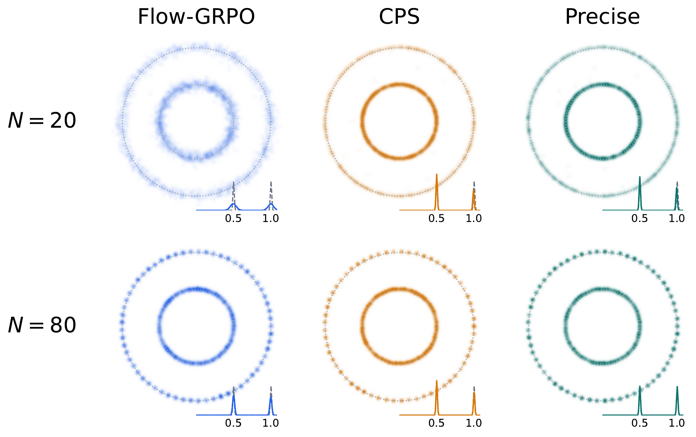
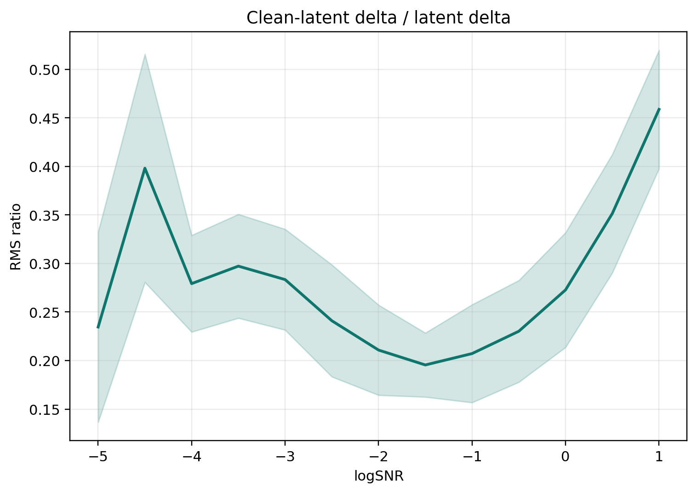
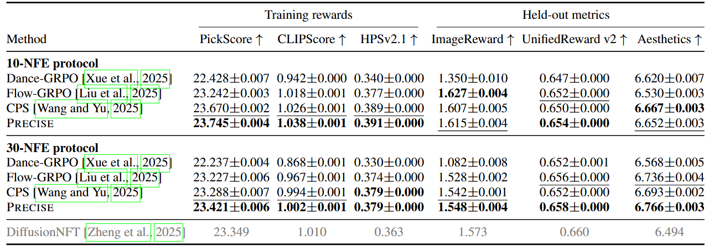
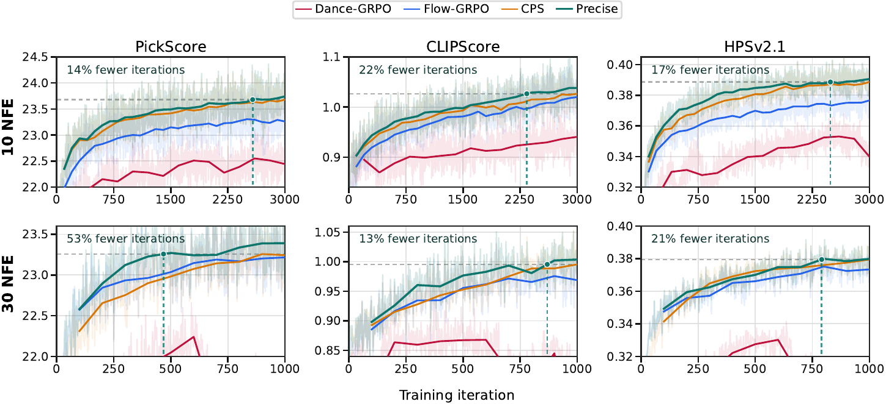
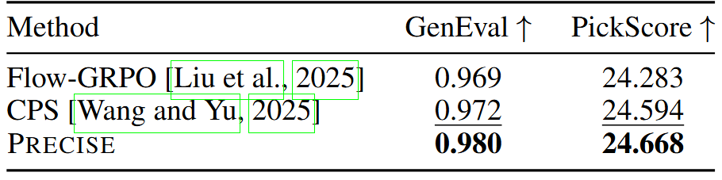
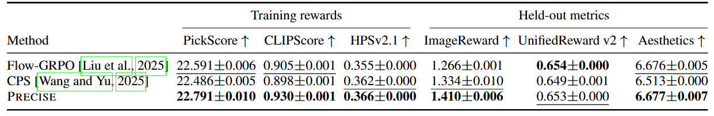
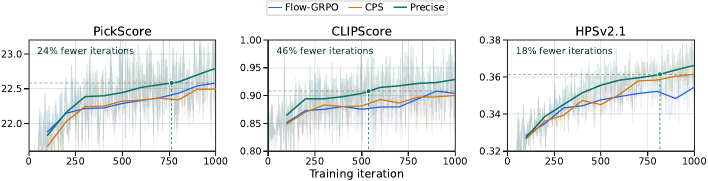
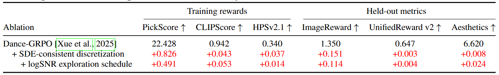
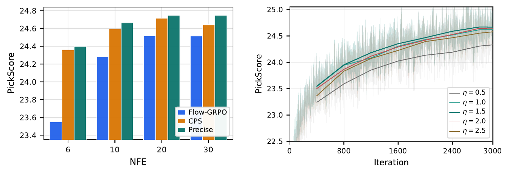

Reinforcement learning (RL) has become an effective way to improve prompt alignment and perceptual quality in diffusion and flow-matching generators. A critical step for applying online RL to flow matching is turning the deterministic sampling trajectory into a stochastic policy, typically by replacing the reverse-time Ordinary Differential Equation (ODE) with a Stochastic Differential Equation (SDE). The stochastic sampler, controlling the exploration behavior and denoising dynamics, is thus part of the policy, and its design can significantly affect the reward optimization performance. We break down the sampler design into two interdependent components: choosing the right amount of stochastic exploration, and discretizing the resulting SDE faithfully at the small step counts used in RL. To address the first component, we analyze the inherent tension between exploration and stability in denoising and derive an SDE schedule that balances the two. Turning to the discretization challenge, we use a toy example to show that existing samplers can deviate from the flow-matching process, either by introducing excessive discretization noise or by relying on heuristic rules that do not guarantee convergence to the data distribution. To address these issues, we propose Precise, a new stochastic sampler that balances effective exploration with stability. Crucially, Precise keeps the denoising trajectory SDE-consistent through a novel approximation that freezes the clean-latent posterior mean, resolving the excess noise issue in standard samplers.
Extensive experiments demonstrate that this formulation leads to significantly faster and more stable reward optimization via reinforcement learning, achieving state-of-the-art alignment scores (e.g., PickScore, HPSv2.1) while requiring 13.1–53.2% less wall-clock training time to match the best in-domain performance of prior samplers.
Introduction & analysis (figures)

Sampler design has two coupled axes. Vertical: exploration–stability balance, set by the noise schedule $\varepsilon_t$. Horizontal: SDE consistency, set by the finite-step transition rule. Dance-GRPO is too conservative early and too aggressive late; Flow-GRPO injects excess discretization noise at small NFE; CPS preserves coefficients but collapses residual posterior uncertainty. Precise improves both axes simultaneously.

Double-ring point-mass toy. Flow-GRPO's Euler step inflates the outer ring as $\varepsilon$ grows (excess discretization noise); CPS preserves nominal coefficients but contracts variance and biases the marginal toward the posterior mean. Precise recovers the target marginal across all tested $\varepsilon$.
A logSNR-balanced exploration schedule + an SDE-consistent closed-form transition, coupled through a frozen clean-latent posterior mean approximation.
We use the linear flow-matching interpolation $\mathbf{z}_t=\alpha_t\mathbf{z}_0+\sigma_t\boldsymbol{\epsilon}$ with $\alpha_t=1-t$, $\sigma_t=t$, and $\boldsymbol{\epsilon}\sim\mathcal{N}(\mathbf{0},\mathbf{I})$. A flow-matching network predicts the target velocity $\mathbf{u}_t=\boldsymbol{\epsilon}-\mathbf{z}_0$ from $(\mathbf{z}_t,t)$:
\[ \mathbf{z}_t \;=\; (1-t)\,\mathbf{z}_0 + t\,\boldsymbol{\epsilon}. \]
To enable on-policy RL, Flow-GRPO and Dance-GRPO replace the deterministic ODE with the reverse-time SDE
\[ \mathrm{d}\mathbf{z}_t \;=\; \Bigl( \mathbf{u}_t \;-\; \tfrac{1}{2}\,\varepsilon_t^{2}\,\nabla_{\mathbf{z}}\log p_t(\mathbf{z}_t) \Bigr)\mathrm{d}t \;+\; \varepsilon_t\,\mathrm{d}\mathbf{w}_t, \]
where $\varepsilon_t \ge 0$ is the exploration schedule and $\mathbf{w}_t$ is Brownian motion. Defining the clean-latent posterior mean $\hat{\mathbf{z}}_0(t)\triangleq\mathbb{E}[\mathbf{z}_0\mid\mathbf{z}_t]$, the noise and score directions admit closed forms
\[ \hat{\boldsymbol{\epsilon}}(t) \;=\; \frac{\mathbf{z}_t-(1-t)\hat{\mathbf{z}}_0(t)}{t}, \qquad \nabla_{\mathbf{z}}\log p_t(\mathbf{z}_t) \;=\; \frac{(1-t)\hat{\mathbf{z}}_0(t)-\mathbf{z}_t}{t^{2}}. \]
Two coupled choices then define the on-policy sampler: the schedule $\varepsilon_t$, and the finite-step rule that discretizes the reverse SDE at the small NFE budget used in RL.
We measure denoising progress with the log signal-to-noise ratio $\lambda_t=\log\bigl((1-t)^{2}/t^{2}\bigr)$. A first-order expansion of an infinitesimal reverse step shows that the velocity term contributes $\Delta\lambda_{\mathrm{vel}}=2\Delta t/(t(1-t))$ to the logSNR, while the score and stochastic terms cancel each other at first order with magnitudes $\pm\,\varepsilon_t^{2}\Delta t/t^{2}$. The net first-order progress is therefore independent of $\varepsilon_t$, but the score-induced "extra denoising work" asked of the model scales like $\varepsilon_t^{2}/t^{2}$. We pin this work to be a constant fraction of the velocity progress, $R(t)\triangleq\Delta\lambda_{\mathrm{sco}}/\Delta\lambda_{\mathrm{vel}}=\mathrm{const}$, giving
\[ \boxed{\;\varepsilon_t \;=\; \eta\sqrt{\dfrac{t}{1-t}},\qquad R(t)\;=\;\dfrac{\eta^{2}}{2}.\;} \]
The scalar $\eta>0$ thus directly controls the score-to-velocity progress ratio. In practice values around $\eta\!\approx\!\sqrt{2}$ make the score-induced progress comparable to the velocity progress and work well across backbones and rewards.
Euler–Maruyama injects excess discretization noise. The standard Euler step used by Flow-GRPO and Dance-GRPO freezes the velocity and score at time $t$, ignoring the feedback of the freshly injected noise on $\mathbf{u}_t$ and $\nabla\log p_t$. On the toy point-mass data law $\mathbf{z}_\star$, plugging the corresponding $(\mathbf{u}_t,\nabla\log p_t)$ into the Euler step yields
\[ \mathbf{z}_{t'}^{\mathrm{Euler}} \;=\; (1-t')\mathbf{z}_\star +\Bigl(t' - \tfrac{\varepsilon_t^{2}\Delta t}{2t}\Bigr)\boldsymbol{\epsilon} +\varepsilon_t\sqrt{\Delta t}\,\mathbf{w}. \]
Because $\mathbf{w}\!\perp\!\boldsymbol{\epsilon}$, the effective noise coefficient becomes $\sqrt{(t'-\varepsilon_t^{2}\Delta t/(2t))^{2}+\varepsilon_t^{2}\Delta t}>t'$ whenever $\varepsilon_t>0$— the sampler adds excess noise even with a perfect model.
CPS preserves coefficients but contracts the marginal. Coefficient-preserving samplers use posterior-mean updates of the form $\mathbf{z}_{t'}^{\mathrm{CPS}}=(1-t')\hat{\mathbf{z}}_0(t)+k_1\hat{\boldsymbol{\epsilon}}(t)+k_2\mathbf{w}$ with $k_1^{2}+k_2^{2}={t'}^{2}$. They are exact under point-mass data, but for non-degenerate distributions the posterior mean discards residual uncertainty in $\mathbf{z}_0\mid\mathbf{z}_t$, so the covariance contracts by exactly
\[ \mathrm{Cov}_{\text{target}}-\mathrm{Cov}_{\text{CPS}} \;=\; (1-t')^{2}\,\mathbb{E}_{\mathbf{z}_t}\!\bigl[\mathrm{Cov}(\mathbf{z}_0\mid\mathbf{z}_t)\bigr], \]
which manifests as a persistent marginal bias on the double-ring toy (see Motivation carousel).
The Euler failure is feedback blindness; the CPS failure is variance collapse. We want a finite-step rule that keeps the reverse-SDE dynamics yet has a stable per-step anchor. Our key observation: the clean-latent posterior mean $\hat{\mathbf{z}}_0(t)$ moves only mildly under isotropic perturbations of $\mathbf{z}_t$, because estimating it is exactly the denoising task the network was pretrained on. We therefore freeze $\hat{\mathbf{z}}_0(t)$ over a single reverse step — but, unlike CPS, we use it only as a linearization anchor; the residual stochastic variance is still set by the SDE transition. Rewriting the reverse SDE around this anchor gives
\[ \mathrm{d}\mathbf{z}_t \;=\; \Bigl( \frac{\mathbf{z}_t-\hat{\mathbf{z}}_0(t)}{t} +\frac{\varepsilon_t^{2}}{2t^{2}}\bigl(\mathbf{z}_t-(1-t)\hat{\mathbf{z}}_0(t)\bigr) \Bigr)\mathrm{d}t +\varepsilon_t\,\mathrm{d}\mathbf{w}_t. \]

Under this assumption the SDE becomes linear in $\mathbf{z}_t$ and can be solved in closed form.
Plugging in the logSNR-balanced schedule $\varepsilon_t=\eta\sqrt{t/(1-t)}$ gives $A(t',t)=\eta^{2}\log\!\bigl(t(1-t')/(t'(1-t))\bigr)$, and the transition collapses into the clean update rule actually used by Precise:
\[ \boxed{\; \mathbf{z}_{t'} \;=\; (1-t')\,\hat{\mathbf{z}}_0(t) \;+\; t'\,\rho(t',t)\,\hat{\boldsymbol{\epsilon}}(t) \;+\; t'\sqrt{1-\rho(t',t)^{2}}\,\mathbf{w}, \qquad \rho(t',t) \;=\; \Bigl(\dfrac{t'(1-t)}{t(1-t')}\Bigr)^{\eta^{2}/2}. \;} \]
The two terms after $\hat{\mathbf{z}}_0(t)$ have squared norms that sum to ${t'}^{2}$, which exactly matches the flow-matching marginal at $t'$: no excess discretization noise. And because $\hat{\mathbf{z}}_0(t)$ is used only as a step-local anchor, posterior covariance is preserved—no CPS-style marginal contraction.
Experiments — main table, training curves, and head-to-head (replace placeholder table PNGs from your LaTeX build).

Main SD3.5-M results. Two protocols: 10-NFE / 3000-iter and 30-NFE / 1000-iter (~3 days each on 8× NVIDIA H20). Entries are mean±std over three evaluation seeds; higher is better. Bold = best, underline = runner-up. The gray row is DiffusionNFT, trained at its default 25-NFE setting and evaluated at 30-NFE. Precise ranks first on every training reward under both protocols and is top-2 on the held-out metrics.

Training trajectories for PickScore, CLIPScore, and HPSv2.1 under both protocols. Using the best prior-sampler value on each reward as the target, Precise reaches it with 14.2–22.1% fewer iterations at 10 NFE and 13.1–53.2% fewer at 30 NFE—direct wall-clock savings since sampler overhead is negligible.

Task-level head-to-head (10-NFE protocol). One rule-based reward (GenEval) and one model-based reward (PickScore). Precise wins both: GenEval 0.980 vs. 0.972 (CPS) / 0.969 (Flow-GRPO), and PickScore 24.668 vs. 24.594 / 24.283.
20 NFE / 1000 iterations

FLUX.2 Klein 4B Base, 20-NFE / 1000-iter, LoRA $r=16,\,\alpha=16$, ~1 day on 8× NVIDIA H20. Mean±std over three eval seeds; higher is better. Precise ranks first on 5 of 6 metrics and stays within 0.001 of best on UnifiedReward v2—gains transfer cleanly from SD3.5-M to the newer FLUX.2 backbone.

FLUX.2 Klein training curves under the 20-NFE protocol (PickScore / CLIPScore / HPSv2.1). Precise rises fastest and reaches the best prior-sampler value with 18.4–46.3% fewer iterations across the three training rewards.
Schedule + discretization; NFE and η sweeps

Decomposing Precise's gains (SD3.5-M, 10-NFE, 3000-iter). Starting from Dance-GRPO (constant $\varepsilon_t$ + Euler step), swapping in our SDE-consistent frozen-posterior-mean step gives +0.826 PickScore / +0.037 HPSv2.1 / +0.151 ImageReward; further swapping the constant schedule for $\varepsilon_t=\eta\sqrt{t/(1-t)}$ adds another +0.491 / +0.014 / +0.114. Both design components contribute.

Robustness sweeps on PickScore. Left: NFE $\in\{6,10,20,30\}$ at 3000 iters — Precise leads at every step count, with the largest margin in the aggressive 6-NFE regime where Flow-GRPO degrades sharply from excess noise. Right: exploration strength $\eta\in\{0.5,1.0,1.5,2.0,2.5\}$ for Precise at 10 NFE—flat across $\eta\in[1.0,2.0]$, with graceful degradation at the extremes.
Appendix-style contact sheets (PickScore training)
10-NFE protocol contact sheet (PickScore training, SD3.5-M). Compared with Flow-GRPO (excess discretization noise → blurred objects and broken attribute binding) and CPS (collapsed variance → repetitive layouts), Precise preserves global structure, fine-grained details, and prompt-specified attributes.
30-NFE protocol contact sheet (PickScore training, SD3.5-M). At higher step budget all three samplers improve, but Precise still produces the most consistent identity, scene layout, and color fidelity across prompts.
@misc{zou2026precisesdeconsistentstochasticsampling,
title={Precise: SDE-Consistent Stochastic Sampling for RL Post-Training of Flow-Matching Models},
author={Jade Zou and Tao Huang and Weijie Kong and Junzhe Li and Yue Wu and Qi Tian and Jiangfeng Xiong and Jianwei Zhang and Liefeng Bo and Zhao Zhong},
year={2026},
eprint={2605.23522},
archivePrefix={arXiv},
primaryClass={cs.LG},
url={https://arxiv.org/abs/2605.23522},
}